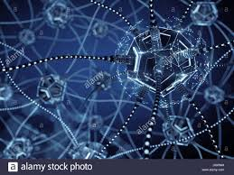

Les débuts de l'IA
L'humain battu au jeu d'échec
L'IA se perfectionne

L'humain battu au jeu de go
|
Stephen Hawking’s final warning for humanity:
AI is coming for us
Stephen Hawking’s biggest warning is about the rise of artificial intelligence: It will either be the best
thing that’s ever happened to us, or it will be the worst thing. If we’re not careful, it very well
may be the last thing.
Artificial intelligence holds great opportunity for humanity, encompassing everything from Google’s
algorithms to self-driving cars to facial recognition software. The AI we have today, however, is
still in its primitive stages. Experts worry about what will happen when that intelligence outpaces
us. Or, as Hawking puts it, “Whereas the short-term impact of AI depends on who controls it, the
long-term impact depends on whether it can be controlled at all.”
This might sound like the stuff of science fiction, but Hawking says dismissing it as such “would
be a mistake, and potentially our worst mistake ever.”
Compared to robots, we humans are pretty clunky. Limited by the slow pace of evolution, it takes
us generations to iterate. Robots, on the other hand, can improve upon their own design a lot
faster, and soon, they’ll probably be able to do so without our help. Hawking says this will create
an “intelligence explosion” in which machines could exceed our intelligence “by more than ours
exceeds that of snails.”
A lot of people think that the threat of AI centers on it becoming malevolent rather than benevolent.
Hawking disabuses us of this concern, saying that the “real risk with AI isn’t malice, but
competence.” Basically, AI will be very good at accomplishing its goals; if humans get in the way,
we could be in trouble.
“You’re probably not an evil ant-hater who steps on ants out of malice, but if you’re in charge of
a hydroelectric green-energy project and there’s an anthill in the region to be flooded, too bad
for the ants. Let’s not place humanity in the position of those ants,” Hawking writes.
For those still unpersuaded, he suggests a different metaphor. “Why are we so worried about AI?
Surely humans are always able to pull the plug?” a hypothetical person asks him.
Hawking answers: “People asked a computer, ‘Is there a God?’ And the computer said,
‘There is now,’ and fused the plug.”
|
L'IA se perfectionne
Naissance des androïdes
L'IA se perfectionne
Spécialisation dans l'éradication des nuisibles
|
Elon Musks - ‘Mark my words :
A.I. is far more dangerous than nukes’
Elon Musk has doubled down on his dire warnings about the danger of artificial intelligence.
he is resolute, calling those who push against his warnings “fools”.
“The biggest issue I see with so-called AI experts is that they think they know more than they do,
and they think they are smarter than they actually are,” said Musk.
“This tends to plague smart people. They define themselves by their intelligence and they don’t
like the idea that a machine could be way smarter than them, so they discount the idea — which
is fundamentally flawed.”
Based on his knowledge of machine intelligence and its developments, Musk believes there is
reason to be worried.
“I am really quite close, I am very close, to the cutting edge in AI and it scares the hell
out of me,” said Musk. “It’s capable of vastly more than almost anyone knows and the rate
of improvement is exponential.”
Musk worries AI’s development will outpace our ability to manage it in a safe way.
“So the rate of improvement is really dramatic. We have to figure out some way to ensure
that the advent of digital super intelligence is one which is symbiotic with humanity.
I think that is the single biggest existential crisis that we face and the most pressing one.”
“I am not really all that worried about the short term stuff.
Narrow AI is not a species-level risk. It will result in dislocation, in lost jobs,and
better weaponry and that kind of thing, but it is not a fundamental species level risk,
whereas digital super intelligence is,” explained Musk.
“So it is really all about laying the groundwork to make sure that if humanity collectively
decides that creating digital super intelligence is the right move, then we should do so
very very carefully — very very carefully. This is the most important thing that we could possibly do.”
|